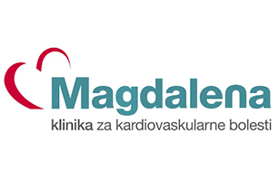

Poliklinika Magdalena želi uvesti telematički informatički sustav gdje bi njihovi pacijenti mogli raditi zapise o sistoličkom i dijastoličkom tlaku te slati te informacije na centralni sustav koristeći mobitel. Doktor s druge strane može u bilo kojem trenutku odabrati pacijenta i vidjeti njegove zapise.
